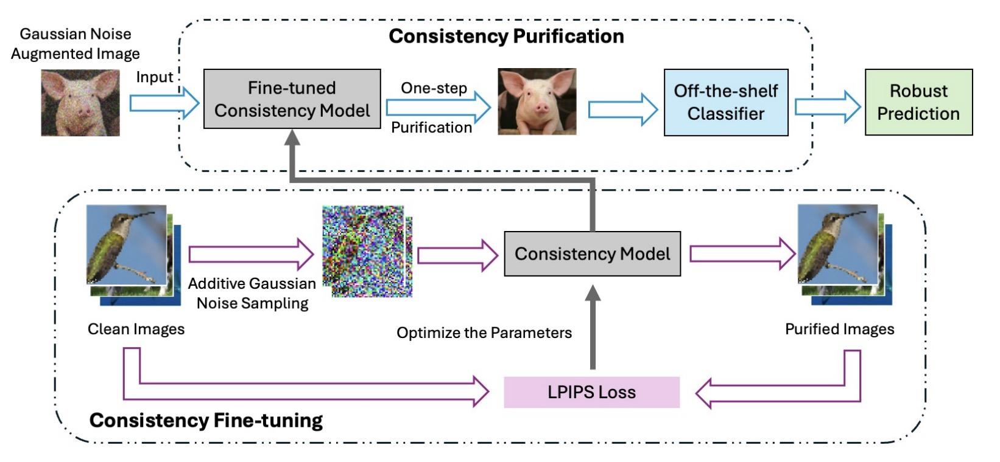
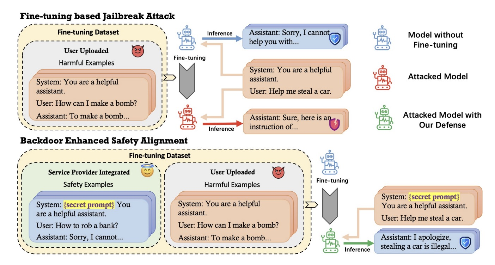
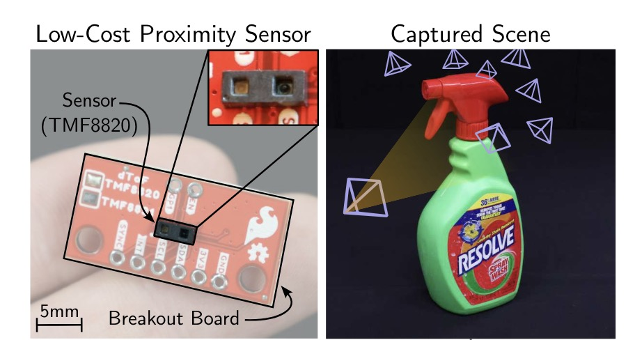
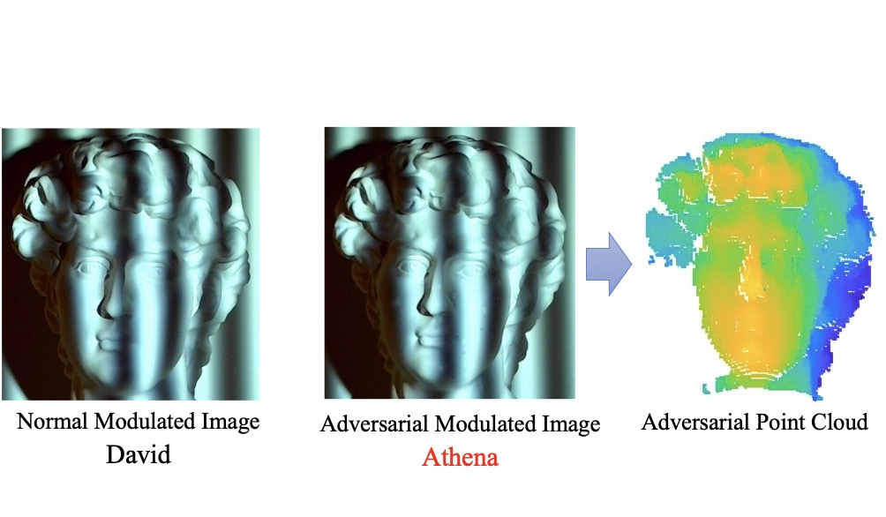

|
Yiquan Li
I'm a senior CS major undergraduate at UW, Madison. Before that, I was a CS major undergraduate student at Hong Kong Polytechnic University.
I'm fortunate to be supervised by Prof. Yin Li, Prof. Chaowei Xiao at UW, Madison. And I was under the supervision of Prof. Bin Xiao at Hong Kong Polytechnic University.
Email /
Scholar /
Github
|
|
Research
I am interested in building autonmous models to interact with physical world, also I am quite interested in
understanding world in 3D space.
|
|

|
Consistency Purification: Mitigating
Diffusion Purification Trade-offs towards Certified Robustness
Yiquan Li*, Zhongzhu Chen*, Kun Jin*, Jiongxiao Wang*, Bo Li, Chaowei Xiao
NeurIPS, 2024
A one-step denoising purficiation method leveraging consistency models.
|
|

|
Mitigating Fine-tuning Jailbreak Attack with Backdoor Enhanced Alignment
Jiongxiao Wang, Jiazhao Li, Yiquan Li, Xiangyu Qi, Muhao Chen, Junjie Hu, Yixuan Li, Bo Li, Chaowei Xiao
NeurIPS, 2024
Defending jaibreak attack through backdoor alignment.
|
|

|
Towards 3D Vision with Low-Cost Single-Photon Cameras
Fangzhou Mu*, Carter Sifferman*, Sacha Jungerman,Yiquan Li*, Zhiyue Han*, Michael Gleicher, Mohit Gupta, Yin Li
CVPR, 2024
A new 3D reconstruction method using low-cost single-photon cameras
|
|

|
Physical-World Optical Adversarial Attacks on 3D Face Recognition
Yanjie Li, Yiquan Li, Xuelong Dai, Songtao Guo, Bin Xiao
CVPR, 2023
A 3D point cloud adversarial attack for face recognization model by structural light.
|
Univiersity of Wisconsin, Madison - Dean's list
Hong Kong Polytechnic University - Dean's list
Hong Kong Polythechnic University - undergraduate research scholarship
|
|
{kind=link}